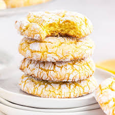

Cake Mix Cookies

Three ingredient cookies for when you need to make a dessert easily and quickly
- 1 box cake mix, 15.25 oz
- 1 8-oz container frozen whipped dessert topping, thawed
- optional mix ins, such as:
- chocolate chips
- cookie crumbs
- chopped nuts
- 1/2 cup powedered sugar to coat, OR something custom like:
- sprinkles
- shredded coconut
- cinnamon sugar
- Preheat oven to 350 degrees F and line a cookie sheet with parchment paper
- Combine cake mix and any optional mix ins
- Stir in whipped dessert topping. The dough will be sticky.
- Place coating material in a bowl. Roll 1-Tbsp-sized dough balls in the coating material and 2 inches apart on cookie sheet(s)
- Bake until edges are just set, 8 to 10 minutes
- Cool slightly on sheets then move to wire racks to cool completely